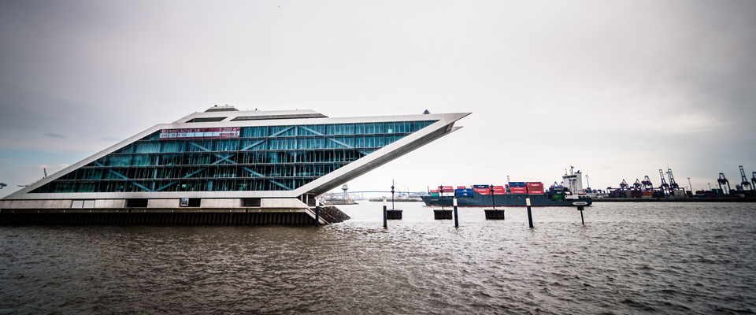
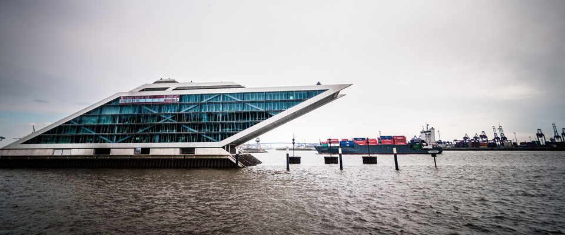

起始主题
超文本标记语言，标准通用标记语言下的一个应用。“超文本”就是指页面内可以包含图片、链接，甚至音乐、程序等非文字元素。超文本标记语言的结构包括“头”部分（英语：Head）、和“主体”部分（英语：Body），其中“头”部提供关于网页的信息，“主体”部分提供网页的具体内容。
新事件
更新新闻和事件-

图片1
万维网上的一个超媒体文档称之为一个页面（外语：page）。作为一个组织或者个人在万维网上放置开始点的页面称为主页（外语：Homepage）或首页，主页中通常包括有指向其他相关页面或其他节点的指针（超级链接）。
-

图片2
所谓超级链接，就是一种统一资源定位器（Uniform Resource Locator，外语缩写：URL）指针，通过激活（点击）它，可使浏览器方便地获取新的网页。这也是HTML获得广泛应用的最重要的原因之一。在逻辑上将视为一个整体的一系列页面的有机集合称为网站（Website或Site）。
-

图片3
超级文本标记语言（英文缩写：HTML）是为“网页创建和其它可在网页浏览器中看到的信息”设计的一种标记语言。网页的本质就是超级文本标记语言，通过结合使用其他的Web技术（如：脚本语言、公共网关接口、组件等），可以创造出功能强大的网页。因而，超级文本标记语言是万维网（Web）编程的基础。